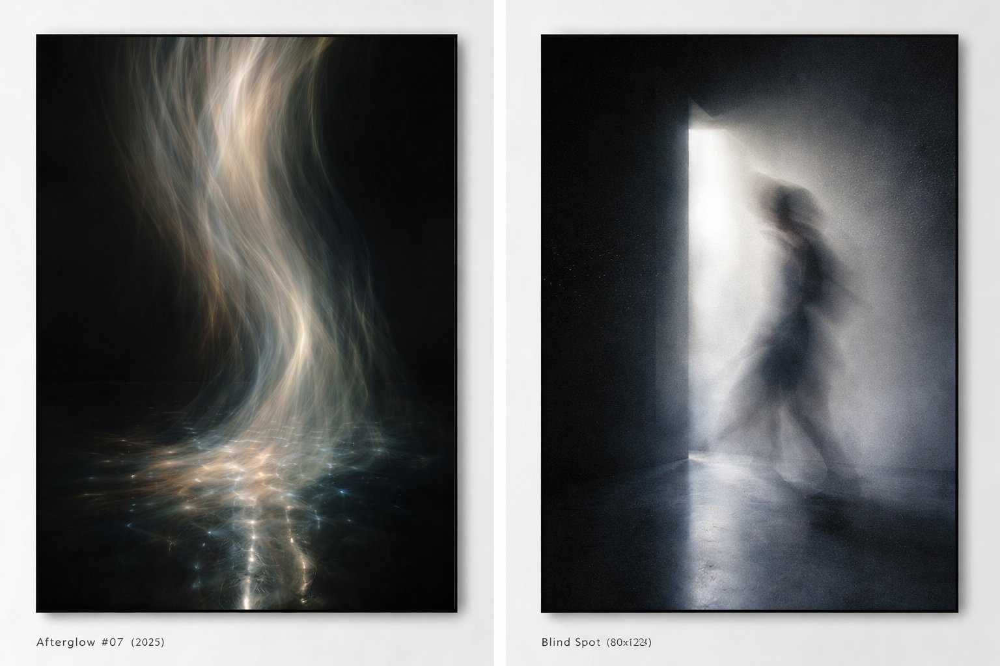
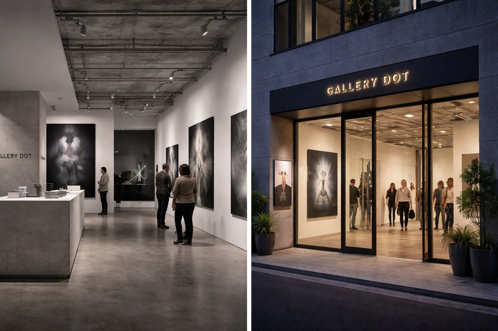
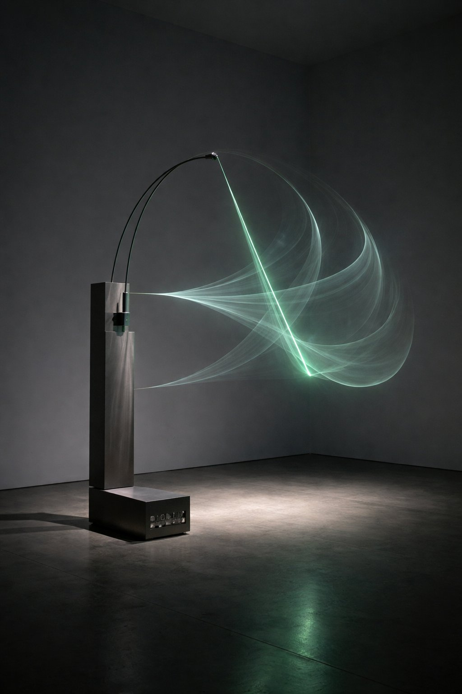
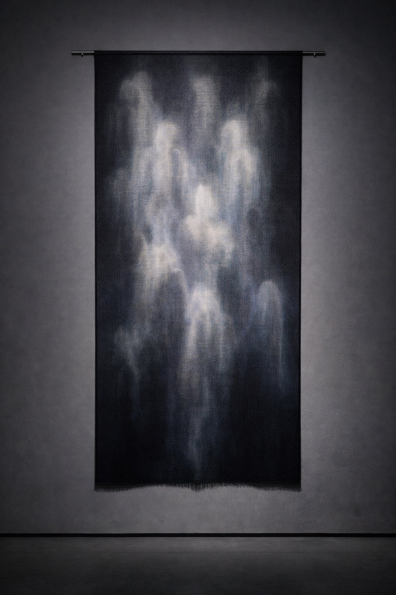
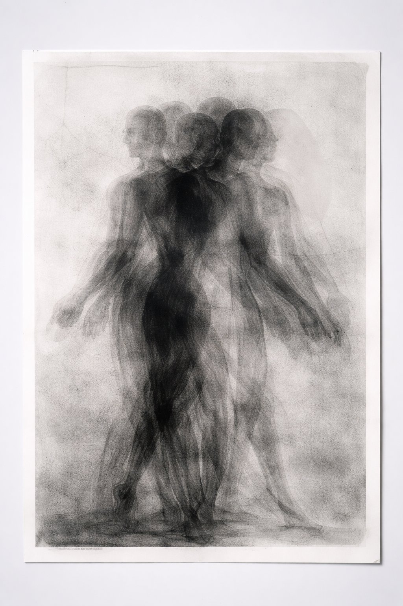
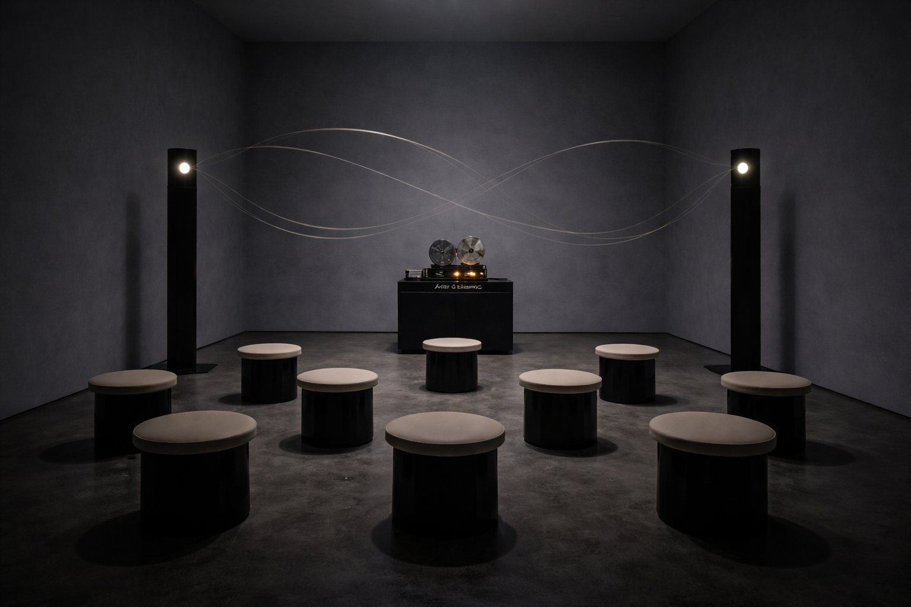
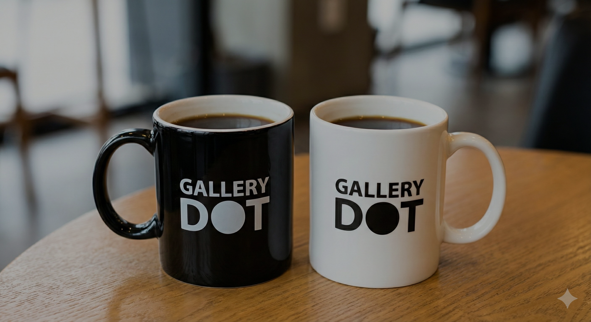

GALLERY DOT 10th Anniversary
ここでしか見られない新作・未公開作を一堂に展示。事前予約で来場された方に、10周年記念マグカップをプレゼント。おひとり様1点、数量限定。
＼ 先着・数量限定 ／

光が去ったあとに浮かぶ像のように、創作の時差を見つめる展覧会。10年で出会った作家たちの新作・未公開作を中心に、記憶と物質が交わる瞬間を展示します。
微光下での長秒露光により、視覚の遅延を写真上に定着させる。光そのものの「残り方」を問い直す作品群。
《Afterglow #07》2025, ラムダプリント＋UVレジン, 100×140cm
© Yui Orihara / Courtesy of GALLERY DOT

02周期的に揺れるアームが残像の軌跡をレーザーで空間に描画。動きそのものが彫刻となる体験型作品。
《Echo Pendulum》2025, ステンレス・磁石・モーター, W120×D80×H210cm
© NORI / Courtesy of GALLERY DOT

03アルゴリズムが生成した残像パターンを実布に織り戻す。デジタルとクラフトの境界を溶かすプロジェクト。
《weave_ghost 3》2025, ジャカード織（シルク/和紙）, 180×90cm
© Rin Saeki / Courtesy of GALLERY DOT
気になる作品はありましたか？
来場予約する
04身体の動きを一版に重ね刷りして生まれる多重像。身体が残す痕跡の記録としての版画。
《Residual Bodies》2023, モノタイプ＋グラファイト, 70×100cm
© Hanna K. / Courtesy of GALLERY DOT

05Room Bにて展開。定在波スピーカーとテープループによる音の残像空間。入場10名・15分入替制。
《After Silence》2025, 定在波スピーカー・テープループ, 可変
© Naoto Sakai / Courtesy of GALLERY DOT
事前予約＋当日チェックインで、記念マグカップを1点プレゼント。おひとり様1点限り、なくなり次第終了。

LPから来場日時を事前予約
当日、入口でQRコードをスキャン（チェックイン）
物販横にてマグカップを受け取り（色はお選びいただけない場合があります）
GALLERY DOT 開廊。「Dot Studies #01」シリーズ開始
若手作家支援プログラム開始（年間3名）
「New Vision Tokyo」企画 — Tokyo Art Directors Award 入選
海外フェア初出展（Art Busan / Discoveries）
オンライン・ビューイング開設（年間来場 2.8万UU）
「Shadow Index」（都美術館 連携企画）優秀企画賞
アーティスト・イン・レジデンス（新潟）開始
「Edge After Edge」図録が写真協会ブックアワード ショートリスト
企業コレクション向けキュレーション5件
企業・法人のお問い合わせ → info@gallery-dot.jp
10周年記念展 "AFTER IMAGE" 開催
〒150-0001 東京都渋谷区神宮前 1-2-3 DOT BLDG 1F
最寄り駅JR 原宿駅 徒歩5分 ／ 東京メトロ 明治神宮前〈原宿〉駅 徒歩3分
予約完了後、QRコードをメールでお送りします。当日は入口でQRをご提示ください。
前日18:00まで、確認メール内の「予約変更」リンクから変更いただけます。
当日中であれば、受付でスタンプをご提示いただくことで再入場が可能です。
静止画撮影は可能です（フラッシュ不可・動画不可）。一部作品は全撮影不可の掲示がありますのでご注意ください。
はい、お子さま連れでのご来場は歓迎です。未就学児は手をつなぐなど安全へのご配慮をお願いいたします。
いいえ。特典は予約者ご本人のみ1点です。同伴者（最大2名）は入場可能ですが、特典の対象外となります。
混雑時は予約優先・入場制限を行う場合があります。特典（マグカップ）は事前予約＋当日チェックインの方のみが対象です。
残像のように、あなたの記憶に残る体験を。